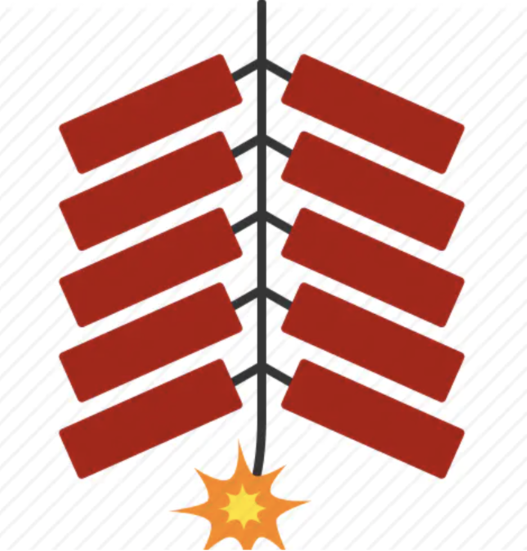
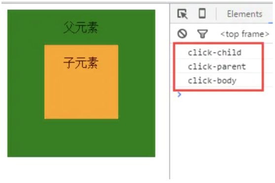
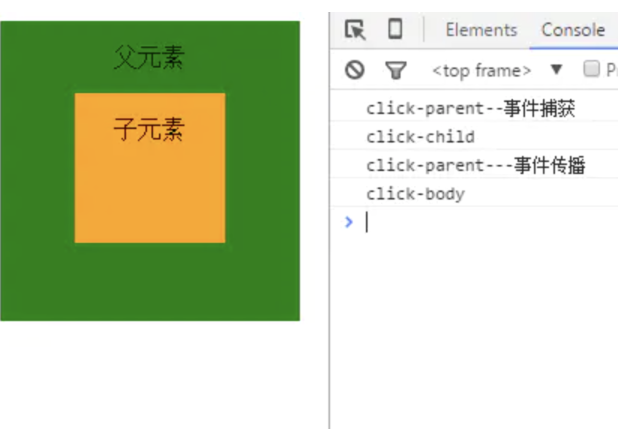

DOM 事件流（event flow ）存在三个阶段：事件捕获阶段、处于目标阶段、事件冒泡阶段。
(adsbygoogle = window.adsbygoogle || []).push({}); 事件捕获（event capturing）*：通俗的理解就是，当鼠标点击或者触发 dom 事件时，浏览器会从根节点开始由外到内*进行事件传播，即点击了子元素，如果父元素通过事件捕获方式注册了对应的事件的话，会先触发父元素绑定的事件。
事件冒泡*（dubbed bubbling）***：**与事件捕获恰恰相反，事件冒泡顺序是由内到外进行事件传播，直到根节点。
无论是事件捕获还是事件冒泡，它们都有一个共同的行为，就是事件传播，它就像一跟引线，只有通过引线才能将绑在引线上的鞭炮（事件监听器）引爆，试想一下，如果引线不导火了，那鞭炮就只有一响了！！！

dom 标准事件流的触发的先后顺序为：先捕获再冒泡，即当触发 dom 事件时，会先进行事件捕获，捕获到事件源之后通过事件传播进行事件冒泡。不同的浏览器对此有着不同的实现，IE10 及以下不支持捕获型事件，所以就少了一个事件捕获阶段，IE11、Chrome 、Firefox、Safari 等浏览器则同时存在。
说到事件冒泡与捕获就不得不提一下两个用于事件绑定的方法 addEventListener、attachEvent。当然还有其它的事件绑定的方式这里不做介绍。
*** addEventListener(event, listener, useCapture)***
*·参数定义：*event---（事件名称，如 click，不带 on），listener---事件监听函数，*useCapture---*是否采用事件捕获进行事件捕捉，
默认为 false，即采用事件冒泡方式
addEventListener 在 IE11、Chrome 、Firefox、Safari 等浏览器都得到支持。
attachEvent(event,listener)
·参数定义：event---（事件名称，如 onclick，带 on），listener---事件监听函数。
attachEvent 主要用于 IE 浏览器，并且仅在 IE10 及以下才支持，IE11 已经废了这个方法了（微软还是挺识趣的，慢慢向标准靠拢）。
说了一箩筐定义，下面就用上面这两个方法通过栗子来解释一下事件捕获与事件冒泡的具体表现行为差异。
事件冒泡
栗 1：
<html lang="zh-cn">
<head>
<meta http-equiv="Content-Type" content="text/html; charset=utf-8">
<title>js事件机制</title>
<style>
#parent{
width: 200px;
height:200px;
text-align: center;
line-height: 3;
background: green;
}
#child{
width: 100px;
height: 100px;
margin: 0 auto;
background: orange;
}
</style>
</head>
<body>
<div id="parent">
父元素
<div id="child">
子元素
</div>
</div>
<script type="text/javascript">
var parent = document.getElementById("parent");
var child = document.getElementById("child");
document.body.addEventListener("click",function(e){
console.log("click-body");
},false);
parent.addEventListener("click",function(e){
console.log("click-parent");
},false);
child.addEventListener("click",function(e){
console.log("click-child");
},false);
</script>
</body>
</html>
作者：zhaozhizheng
链接：https://ld246.com/article/1607659538067
来源：链滴
协议：CC BY-SA 4.0 https://creativecommons.org/licenses/by-sa/4.0/
`通过"addEventListener"方法，采用事件冒泡方式给 dom 元素注册 click 事件，点击子元素会发生什么呢？如果你对事件冒泡有一定了解的话那你肯定知道上面的代码会输出的顺序，没错，如下图所示：

事件触发顺序是由内到外的，这就是事件冒泡，虽然只点击子元素，但是它的父元素也会触发相应的事件，其实这是合理的，因为子元素在父元素里面，点击子元素也就相当于变相的点击了父元素，这样理解对吧？
这里有同学可能要问了，如果点击子元素不想触发父元素的事件怎么办？肯定可以的，那就是停止事件传播---event.stopPropagation();
修改栗 1 的代码，在子元素的监听函数中加入停止事件传播的操作，栗 2
child.addEventListener("click",function(e){
console.log("click-child");
e.stopPropagation();
},false);
在点击子元素的时候就只弹出了子元素那条信息，父元素的事件没有触发，因为事件已经停止传播了，冒泡阶段也就停止了。`
事件冒泡差不多就讲述完了，别急，捕获还没说呢!
栗 3，修改栗子 1 中的代码，给 parent 元素注册一个捕获事件，如下
var parent = document.getElementById("parent");
var child = document.getElementById("child");
document.body.addEventListener("click",function(e){
console.log("click-body");
},false);
parent.addEventListener("click",function(e){
console.log("click-parent---事件传播");
},false);
//新增事件捕获事件代码
parent.addEventListener("click",function(e){
console.log("click-parent--事件捕获");
},true);
child.addEventListener("click",function(e){
console.log("click-child");
},false);
如果你看明白了我前面说的那些，你就知道这个栗子的输出顺序了。

父元素通过事件捕获的方式注册了 click 事件，所以在事件捕获阶段就会触发，然后到了目标阶段，即事件源，之后进行事件传播，parent 同时也用冒泡方式注册了 click 事件，所以这里会触发冒泡事件，最后到根节点。这就是整个事件流程。
上面介绍了事件冒泡、事件捕获、事件传播，下面讲一下如果通过以上三个知识点进行事件委托
委托在 jQuery 中已经得到了实现，即通过 $(selector).on(event,childSelector,data,function,map)实现委托，一般用于动态生成的元素，当然 jQuery 也是通过原声的 js 去实现的，下面举一个简单的栗子，通过 js 实现通过 parent 元素给 child 元素注册 click 事件
var parent = document.getElementById("parent"); var child = document.getElementById("child"); parent.onclick = function(e){ if(e.target.id == "child"){ console.log("您点击了child元素") } }
虽然没有直接只 child 元素注册 click 事件，可是点击 child 元素时却弹出了提示信息。
文章来源：https://ld246.com/article/1607659538067